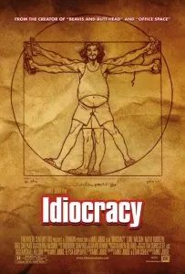

The genetics
The film's premise is a satirical version of dysgenics, the idea that a population can deteriorate genetically when people with less desirable traits have more children. In the film, the most intelligent people choose not to have children while the least intelligent reproduce freely, and five hundred years later society is too dim to run its own technology. No scientists or genetic technologies are involved: the mechanism is simply who has children. The film is mainly a satire of anti-intellectualism, commercialism and consumerism, but its premise echoes the worries of nineteenth- and twentieth-century eugenicists about the 'wrong' people having children. The real evidence points the other way: genetic studies have found no sign of dysgenic effects in human populations, and intelligence test scores rose substantially across much of the world during the twentieth century, a trend known as the Flynn effect.
How genetics is portrayed
- Overall portrayal of genetics
- neutral The film is a satire of anti-intellectualism and consumerism whose premise is a dysgenic 'reverse evolution'; it takes the heritability of intelligence for granted but presents no genetic science or practitioners to judge, so its stance toward genetics as a science is not evaluative.
- Outcome of the genetic intervention
- not applicable No genetic work is done: the decline of intelligence results only from who has children over five centuries, and the hibernation experiment is not genetic.
The story
In 2005 Joe Bauers, an army librarian chosen for being the most average man in the armed forces, and Rita, a prostitute, take part in a one-year military hibernation experiment that is forgotten when its officer is arrested. Over the next five centuries, the narrator explains, intelligent people choose not to have children while the least intelligent reproduce freely, and intelligence and civilisation decline. Joe and Rita wake in 2505 in an anti-intellectual, hyper-commercial America where crops are failing. Arrested for lacking a bar code tattoo, Joe takes an IQ test that reveals him as the most intelligent person alive, and President Camacho, a former wrestler, appoints him Secretary of the Interior. Joe finds that the crops are being irrigated with a sports drink, Brawndo, and replaces it with water; the economic collapse that follows leads to his death sentence, but when the crops sprout he is pardoned. He later becomes president and marries Rita.